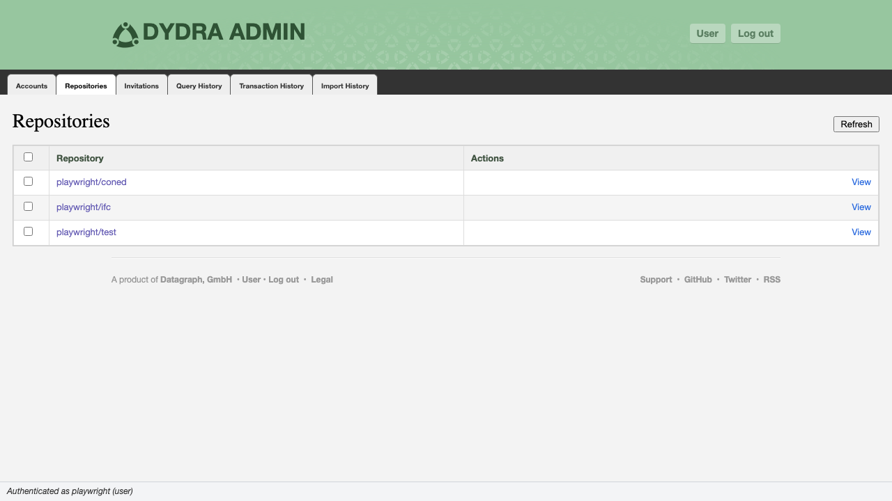

4.1 The Repositories Tab
The Repositories tab presents the repositories belonging to the accounts selected in the Accounts tab. Its contents are determined by the account selection state, making it the second stage in the cross-tab filtering chain described in Section 2.5.
Data is fetched from GET {host}/system/accounts/{accountName}/repositories for each checked account. Results from multiple accounts are aggregated and sorted by the combined account/repository path.

Figure 4.1: The Repositories tab with repositories from selected accounts.
4.2 Table Structure
| Column | Contents | Notes |
|---|---|---|
| Checkbox | Selection control | Checked repositories determine which repositories' query history is fetched in the Query History tab. See Section 2.5. |
| Repository Path | {accountName}/{repositoryName}, rendered as a link |
The link target is the repository's management view in the user application: {host}/ui/user/{accountName}/repositories/{repositoryName}. |
| Actions | View link; Delete button (Admin only) | The View link opens the user application's repository view. The Delete button is suppressed for operator-level sessions. |
4.3 Tab Controls
| Control | Availability | Function |
|---|---|---|
| Refresh | Always | Re-fetches repositories for all currently selected accounts. Clears and rebuilds the table. |
| New | Admin only | Opens the New Repository dialog. See Section 4.4. |
| Check All | Always | Toggles the selection state of all repository checkboxes. Displays an indeterminate state when some but not all repositories are selected. |
4.4 Creating a Repository (Admin only)
New repositories are created from the New Repository dialog. A repository is always created under an existing account.

Figure 4.2: The New Repository dialog.
GET {host}/system/accounts; it reflects the complete account list, not merely those currently checked in the Accounts tab.
POST {host}/system/accounts/{accountName}/repositories.
4.5 Viewing a Repository in the User Application
The View link on each row opens the repository's management page within the user application. This provides access to the repository's data, views, and collaborator configuration — operations that fall outside the scope of the admin console.
4.6 Deleting a Repository (Admin only)
Repository deletion permanently removes the repository and all of its data, views, and access control settings.

Figure 4.3: The repository deletion confirmation dialog.
DELETE {host}/system/accounts/{accountName}/repositories/{repositoryName}.
4.7 Using Repository Selection to Filter Query History
Repository checkboxes control which repositories' query history is displayed in the Query History tab:
- When no repositories are checked, the Query History tab displays no data.
- When one or more repositories are checked, the Query History tab fetches history for exactly those repositories.
- Changing the repository selection triggers an automatic refresh of the Query History tab if that tab has already been loaded.
The Transaction History and Import History tabs are system-wide and are not filtered by repository selection.